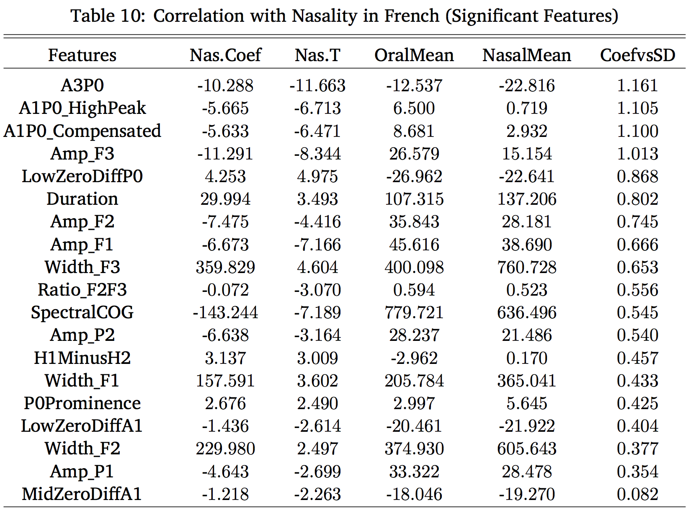
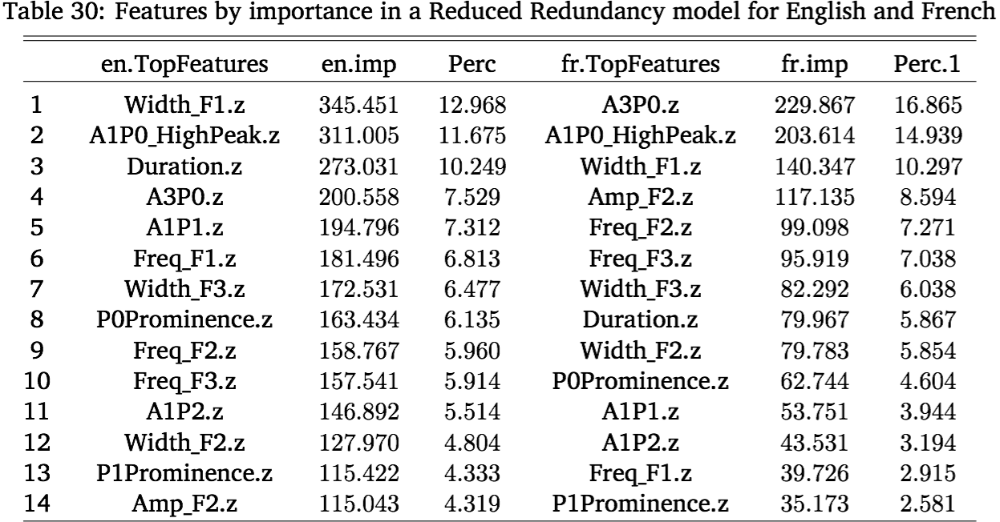
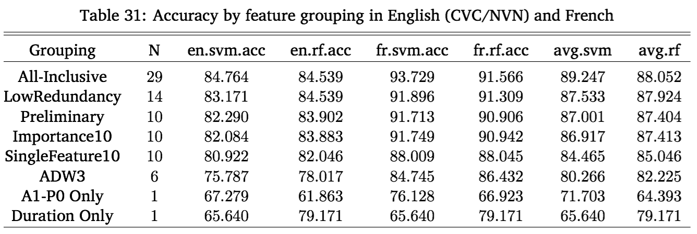
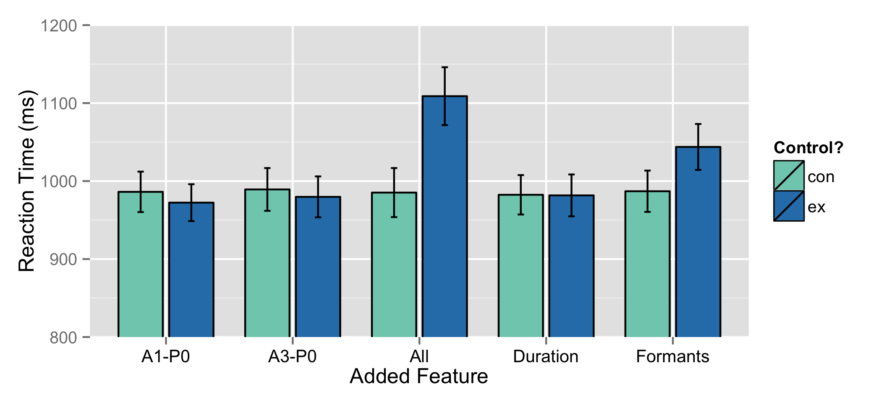
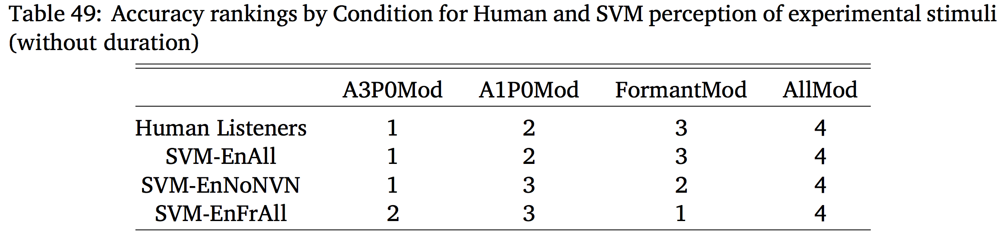

<img class="big" src="humorimg/wizardcat.jpg"> --- # On the Acoustical and Perceptual Features of Vowel Nasality ### Will Styler --- ### Acknowledgements * My Advisor, Rebecca * My Committee * Luciana Marques, Georgia Zellou, and Story Kiser * The rest of the CU Linguistic Community * The Illocutionary Force --- ### More Acknowledgement * My family * Jessica * Vowels --- ### Hi! I'm Will. --- # I've got a Nasality problem. --- ### Vowel Nasality Opening the Velopharyngeal Port during vowel production to allow nasal airflow --- <img class="big" src="phonmedia/sagittal.png"> --- ### Coarticulatory Nasality in English <center> <table> <tr> <th>‘Pats’<br>[pæts]</th> <th>‘Pants’<br>[pæ̃nts]</th> </tr> </table> </center> --- ### Contrastive Nasality in Lakota <center> <table> <tr> <th>‘seed’ <br>[su]</th> <th>‘braid’<br>[sũ]</th> </tr> </table> </center> <audio controls> <source src="phonmedia/della_su-396.wav" type="audio/wav"> </audio> <audio controls> <source src="phonmedia/della_suN_102-397.wav" type="audio/wav"> </audio> --- ### Humans are OK with vowel nasality * ... Yet it's complicated for Linguists... --- > “…To do my experiment I will need to find the point where nasality starts in a vowel, and I am struggling with that a bit. > Would you have an idea about possible ways to look for this point in time where nasality actually starts for each vowel, based on sound?” --- # Nope. --- Our current methods just aren't that accurate --- ### A1-P0: The Reigning Champion <img src="phonmedia/chen1997figure.png"> * *“Nasality makes the vowel formants drop in power, and introduces a nasal resonance. Compare the two.”* --- ### A1-P0 lets us say things about *classes* of vowels. --- “CVN words should have increasing nasality through the vowel” (A1-P0 should drop) --- ### Sure does!* <img class="big" src="phonmedia/scarboroughfigure.png"> * *<danger>(when you have 576 measurements per point)</danger> --- ### ... but we can’t say much about nasality in this vowel right here. --- Going from known-oral to known-nasal parts of vowels, nasality should always go up. * <danger>A1-P0 shows this increase *only 56% of the time*.</danger> --- <img class="big" src="humorimg/surprisedkoala.jpg"> --- Listeners clearly can make judgements about nasality in individual vowels*, but linguists can’t. * <small>(c.f. Lahiri and Marslen-Wilson 1991, Beddor and Krakow 1999, Beddor 2013, Kingston and Macmillin 1995, Macmillin et al 1999)</small> * ## Clearly, then, Nasality is Magic. --- <img class="big" src="img/magic.jpg"> --- ## (Or we just don't know what makes nasals nasal for humans.) --- ### That's where I come in! <img class="big" src="img/will_thumbsup.jpg"> --- ### Two Goals * 1) Figure out what acoustical features change with nasality in English and French * 2) Figure out which ones humans are actually *using* --- ## The Fundamental Problem * ### There are a *lot* of possible features for nasality * <img src="phonmedia/chen1997figure.png"> --- ## The Plan * Collect Data and measure possible features * **Experiment 1** - What features are statistically linked to nasality? * **Experiment 2** - What features are useful for identifying nasal vowels by machine? * (These two experiments combine to tell us which features look most promising) * **Experiment 3** - What features are humans using to perceive nasality? * **Experiment 4** - Do computers show a similar perceptual pattern? --- # Data Collection! --- ### Data Collection * I recorded 12 English and 8 French speakers making words with oral and nasal(ized) vowels * For English, we recorded CVC/CVN/NVC/NVN words * For French, we recorded nasal/oral vowel minimal pairs * Find things that *could* encode nasality, and measure them! * All measurement was done automatically by Praat Script * Measurements happened at two timepoints per vowel --- ### Feature Selection <img src="phonmedia/chen1997figure.png"> --- <img class="big" src="img/diss_featurelist.png"> --- ### Let's talk about a few features more specifically --- ### A1-P0 <img src="phonmedia/chen1997figure.png"> --- ### P0 Prominence <img src="phonmedia/chen1997figure.png"> --- ### Vowel Formant Bandwidth <img class="big" src="phonmedia/iformantslabeled.png "> --- ### Vowel Formant Bandwidth <img src="phonmedia/ispectrum.png"> --- ### Vowel Duration <img class="big" src="img/stopwatch.png"> --- ### Spectral Tilt (A3-P0) <img src="phonmedia/ispectrum.png"> --- ### The Data! * A file showing data 29 different features for two measurements per vowel per word * 15,449 rows! * Annotated with information about language, speaker, phonological structure, etc * All of this was read into the R Statistics Suite --- # Experiment 1: Statistical Analysis! --- ### The Idea * *"If a feature doesn't meaningfully change between oral and nasal vowels, humans won't use it."* * **Let's test which features are different in oral and nasal vowels!** --- ### The Plan * 1) Run a bunch of Linear Mixed-Effects Analyses for English and French * This will show the *statistical* link between the features and nasality * 2) See which features showed significant differences in nasal(ized) vowels * ... and how large the ∆Feature is for each * 3) See if this differs in English and French --- ### The Analyses > lmer(Amp_F1 ~ nasality + repetition + vowel + Timepoint + (1+ nasality|speaker) + (1|Word), data = eng) * This compares the "nasal" vowels to the "oral" vowels * In English, this means CVC to CVN/NVC/NVN * Random slopes for speaker allow by-speaker variation in *amount* of change * Not all features showed a significant statstical link with nasality! --- ### The Findings (English) <img class="big" src="img/diss_encorr.png"> --- ### The Findings (French)  --- ### The *Most Promising* Features * **A1-P0** performed well in both languages * **Duration** showed major changes in both languages * (English nasalized vowels appear shorter, French nasal vowels appear longer) * **Spectral Tilt** was really strong in French, less so in English * **Formant Bandwidth** was really strong in both languages * There was some **Formant Frequency** effect too * **P0's Prominence** is looking pretty good too. --- ### Experiment 1 Wrap-up * Humans probably don't use the features that didn't show significant oral-to-nasal ∆Feature * We now know which features are linked with nasality *across the entire dataset* * ... and which ones show the largest and most meaningful ∆Feature values --- ### ... but how do we know if they're actually helpful for identifying nasality? * These tests show *overall trends* across several thousand words * What about vowel-by-vowel identification? How can we test that? --- Uh... do a perception experiment? --- ### The Problem: Perceptual testing using humans is inefficient and expensive. <!-- .element: class="fragment" --> --- --- <img class="big" src=img/feast.jpg> --- <img class="big" src=img/house.jpg> --- ### ... and they cheat * "I'm rooting for the **pats** in the Super Bowl" * "One should likely wear **pants** to a thesis defense" --- ### ... and they give awful feedback * "Uh, it just sounded like "pants", bro." * "Well, that one sounded more nasally." * "Can I get my extra credit already?" --- ### The Solution? --- ## Ask a Computer! <img class="big" src="img/hal9000.jpg"> --- # Experiment 2: Machine Learning! --- ### The Idea Humans hear a signal, find acoustical features, and then make judgements. * **Machines can be given features, and then make judgements too**. * Better accuracy with a feature means the feature is more *useful*. --- ### Machines have some advantages! * Their decisions are easier to quantify. * They'll tell you *how* they made the decision they did. * They live in my apartment! * They have no idea what "pants" are, and don't watch football. --- ### The Plan * 1) Choose an Algorithm * 2) Give all 29 features to a Machine Learning Algorithm individually * The most accurate features should be the most useful * 3) Give them *everything*, and ask which features are most useful. * Feature weighting and importance are handy! * 4) Find the best group of features * Find the balance between "few features" and "good accuracy" * 5) Test *those* features with expensive humans. --- # Choosing Algorithms --- ### Machine Classification > "Is this datapoint likely in class A, or class B?" * "Is the car driving normally, or crashing?" * "Is this language English or Chinese?" * "Is this handwritten symbol "1"? "2"? "3"? (...) * "Is this word a noun, or a verb, or an adjective, or...?" --- ### My Algorithms of Choice * RandomForests * Because they're transparent * Support Vector Machines * Because they're the gold standard --- Before we discuss RandomForests, we need to talk about... --- ## Decision Trees --- Let's pretend to be classifiers! --- <img class="big" src="img/kayaking.jpg"> --- > "I'm looking at a bird. What kind of bird is it?" --- One Approach: * **Ask questions, then make decisions based on the answer!** --- <img width=1200px src="img/birds_waterfowl.png"> --- By asking enough questions looking at a training set, you'd end up with a **Decision Tree**. * Classification is just "following the tree" * Ask a question, then ask a different question based on the first one, then ask another.... --- ## RandomForests --- ### To make a RandomForest: * 1) Make a decision tree using a subset of the features and data * 2) Make another decision tree using another random subset of features and data * 3-500) Do that 498 more times * 501) Synthesize these models into a single, best-performing model * 502) Classify using that mega-tree! --- Let's make a RandomForest! --- <img class="big" src="img/birds_waterfowl.png"> --- ### RandomForests are great! * They work well with small and large datasets * They're transparent! * ... but they're not the most accurate algorithms out there * ... and they're a bit... odd sometimes. * So we should also use a model which is more accurate * ... and less weird --- ## Support Vector Machines! --- Back to the waterfowl! --- <center> <table> <tr> <th><img height="1000" src="img/bird_mallard.jpg"></th> <th><img height="1000" src="img/bird_swan.jpg"></th> </tr> </table> </center> --- ### Your Kayaking Relative has taken a hands-on approach to classification * You are now recieving texts with bill length and body-length measurements for birds * The question is "Swan, or Duck?" --- <img class="big" src="img/birds_lengthsize.png"> --- ### Support Vector Machines * Look at all the data in an n dimensional space * n is the number of features * Try to find a hyperplane with the best separation * This hyperplane is delineated by the "support vectors" * Classification is just seeing where the new data is relative to that line --- <img class="big" src="img/birds_lengthsize_line.png"> --- (My approach was slightly more complex, using "kernels", but you'll have to read the paper for more info!) --- ### Support Vector Machines * SVMs are *really* accurate * ... and anything that beats them is usually really complex * They act exemplar-ish, when used as I used them. * They're a "gold standard" for machine learning --- ### So, we have two algorithms * RandomForests for transparency * SVMs for accuracy --- ## Let's do some classification! --- ## Single-feature tests --- ### Single-Feature testing * Are any features good enough *on their own* to allow nasal perception? * Using both SVMs and RandomForests. * Using 10-fold cross-validation * 116 models, one per feature per algorithm per language --- <img src="img/diss_overallacc.png"> --- <img src="img/diss_by_feature_en.png"> --- <img src="img/diss_by_feature_fr.png"> --- So, none of the features are good enough on their own. * ### What about as part of a larger group? --- ## Evaluating Feature Importance --- ### RandomForest Importance * RandomForests can calculate *which features were most useful* for classification! * Reclassify, but shuffle the data for one feature per run * If this hurts the accuracy, that feature's important! * This is *awesome*! --- ### Evaluating Feature Importance * Run an all-features-included RandomForest * Compare the Importance Values for each feature ---  --- ... I wonder if all these important features would perform well as a group...? --- ## Multi-feature Models --- ### Multi-feature modeling * Pick six *a priori* feature groupings * There are 20,030,007 other possible groupings of 10 features out of 29 * Test them with SVMs and RandomForests * Compare accuracy *in light of the number of features* * More features will usually mean better accuracy ---  --- Remember, we did this for both English and French * ### So we can ask some fun questions! --- ### Do English and French differ in terms of which features are important? * <img src="img/diss_enfrimportance.png"> --- ### Does the same classifier work well on both? * What happens if you train a model on English, then test it on French? * ... and vice versa. * If they're fundamentally similar, it won't matter! --- ### Cross-language Classification <img src="img/diss_enfraccuracy.png"> --- ## French and English do nasality differently * <img class="big" src="humorimg/surprisedbuffalo.jpg"> --- ### The Findings * **P0's Prominence** was not very useful at all. * We can eliminate it going forward. * **Formant Bandwidth** was the best feature for English, strong in French * **Spectral Tilt** was the most useful feature in French, less so in English * **A1-P0** performed well in both languages * **Duration** was *really* useful in both languages * ... but this could be because it lends itself particularly well to classification * There was some **Formant Frequency** effect too --- So... uh... what about humans? --- # Experiment 3: Human Perception --- ### The Idea > "English can use vowel nasality to identify ambiguous words. Let's see which of these features is helpful!" * Create nasal vowels where each nasal feature is *reduced* * Create oral vowels where each nasal feature is *added* * Put them in contexts where part of the word is missing - ba(d) or ba(n) * If the listeners are confused more often or take more time to choose, the feature's important! --- ### The Plan * 1) Create modified stimuli * Modify A1-P0, A3-P0, Formant Structure and Duration * 2) Create Control Stimuli * Make similar modifications, but then reverse them * 3) Present both to English listeners * 4) Analyze Accuracy and Reaction Time * If modifying different conditions shows different effects, we will understand the cue! --- ### The Modifications <img class="big" src="img/diss_deltafeature.png"> --- ### The Modifications <img class="big" src="img/diss_deltabandwidth.png"> --- ### The Experiment --- <center> <table> <tr> <th><h1>bad</h1></th> <th><h1>ban</h1></th> </tr> </table> </center> <audio controls> <source src="phonmedia/diss_hazel_BAD_nfor_ex_c.wav" type="audio/wav"> </audio> --- <center> <table> <tr> <th><h1>bomb</h1></th> <th><h1>bob</h1></th> </tr> </table> </center> <audio controls> <source src="phonmedia/diss_molly_BOMB_ofor_ex_c.wav" type="audio/wav"> </audio> --- <center> <table> <tr> <th><h1>dad</h1></th> <th><h1>mad</h1></th> </tr> </table> </center> <audio controls> <source src="phonmedia/diss_hazel_DAD_ndur_ex_o.wav" type="audio/wav"> </audio> --- ### The Analysis * **Reduction** stimuli, where nasal features are *reduced* in nasal vowels * **Addition** stimuli, where nasal features are *added* to oral vowels * Linear Mixed Effects Regressions for accuracy and RT by Condition*Control --- ## Addition Stimuli Findings --- <img class="big" src="img/diss_conf.add.sum.png"> ---  --- ### Addition Summary * Modifying all conditions or formants resulted in more confusion * Modifying all conditions or formants resulted in slower responses * Post-hoc tests show that "All" and "Formant" modification did not meaningfully differ for either * **Only modifying formant frequency and bandwidth had an effect on perception** --- ## Removal Stimuli Findings --- <img class="big" src="img/diss_conf.rem.sum.png"> --- <img class="big" src="img/diss_rt.rem.sum.png"> --- ### Removal Summary * *None of the experimental modifications* affected confusion * Modifying all conditions or formants resulted in slower responses * Post-hoc tests show that "All" and "Formant" modification did not meaningfully differ * **Only modifying formant frequency and bandwidth had an effect on perception** * ... but it wasn't enough to change classification! --- ### Experiment 3 Summary * Only **formant modification** had a significant effect on perception * Formant modification caused listeners to respond more slowly * Formant modification made listeners call some oral vowels "nasal" * Formant modification **wasn't enough** to make nasal vowels "oral" --- (We'll talk more about that asymmetry at the end!) --- So, computers predicted F1's bandwidth as the most useful feature... * ### How similar *are* the SVMs and the humans? --- # Experiment 4: Humans vs. Machines * <img class="big" src="img/terminator.png"> --- ### The Idea > "Let's give the computer the same experimental task as the humans, using the same altered stimuli, and see how they compare!" --- ### The Plan * 1) Train SVMs on different datasets * 2) Test those SVMs on the experimental stimuli (classifying "oral" or "nasal") * 3) Compare the by-condition results to the humans --- ### The SVMs * NoNVN - Trained on CVCs, CVNs, and NVCs * EnAll - Trained on *all* the English data * EnFrAll - Trained on all data, English *and* French --- <img src="img/diss_stimml_human_vs_machine_conex.png"> --- <img src="img/diss_stimml_human_vs_machine_con.png"> --- <img src="img/diss_stimml_human_vs_machine_ex.png"> ---  --- ### Experiment 4 Summary * Humans and machines *did* show similar patterns * Putting aside duration, the EnAll SVM mirrored the humans very well * Perceptual testing with machine learning isn't crazy * Humans still win. --- ### Hooray! <img class="big" src="img/morpheus.png"> --- # So... what does it all mean? --- ### Formants are the cue to nasality perception in English * It's probably F1's bandwidth * It worked best in ML, had the best statistical link, and it makes sense acoustically * Hawkins and Stevens (1985) also points that direction * ... but it's probably not the *only* cue for vowel nasality --- ### Reducing Formant Bandwidth doesn't make nasal vowels "oral" * There was still something "nasal" about the vowels * We only took away *universal* formant changes * We modeled the changes that happen in *every* nasal vowels * Vowel-specific formants changes in nasal vowels were *not* affected --- ### Maybe nasal vowels are produced differently in the mouth? * This is in line with prior work * (Carignan et al. (2015), Carignan (2014), Carignan et al. (2011) and Shosted et al. (2012)) * This makes phonological sense * Nasal vowel systems are often really different than the oral vowel systems * If nasal vowels are *orally* different, then of course we wouldn't confuse listeners --- ### So wrapping up * Our current measurements of nasality aren't bad! * Machines *can* accurately classify nasality * ... and simulate human perception * The acoustics of nasality *per se* are clearly useful * Particularly formant bandwidth! * ... but other aspects of the vowel articulation are important too! --- Most importantly... --- ### There's more to a "nasal vowel" than nasal airflow --- <huge>Thank you very much!</huge> --- ### References * Carignan, C. (2014). An acoustic and articulatory examination of the oral in nasal: The oral articulations of french nasal vowels are not arbitrary. Journal of Phonetics, 46(0):23–33. * Carignan, C., Shosted, R., Shih, C., and Rong, P. (2011). Compensatory articulation in american english nasalized vowels. Journal of Phonetics, 39(4):668 – 682. * Carignan, C., Shosted, R. K., Fu, M., Liang, Z.-P., and Sutton, B. P. (2015). A real-time mri investigation of the role of lingual and pharyngeal articulation in the production of the nasal vowel system of french. Journal of Phonetics, 50(0):34 – 51. --- ### References Continued * Chen, M. Y. (1997). Acoustic correlates of english and french nasalized vowels. The Journal of the Acoustical Society of America, 102(4):2350–2370. * Hawkins, S. and Stevens, K. N. (1985b). Acoustic and perceptual correlates of the non-nasal–nasal distinction for vowels. The Journal of the Acoustical Society of America, 77(4):1560–1575. * Shosted, R., Carignan, C., and Rong, P. (2012). Managing the distinctiveness of phonemic nasal vowels: Articulatory evidence from hindi. The Journal of the Acoustical Society of America, 131(1):455–465. ---